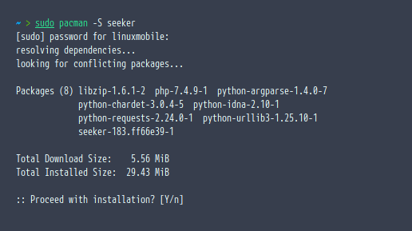
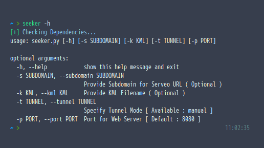
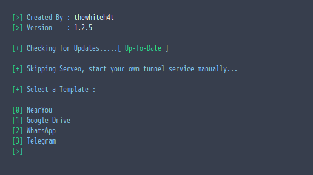
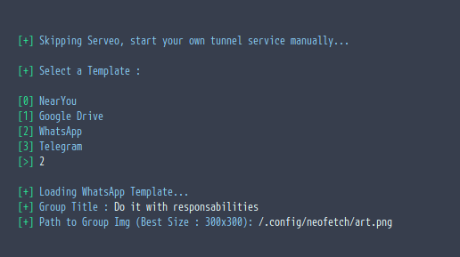
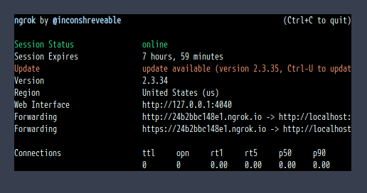
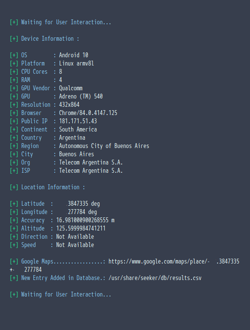
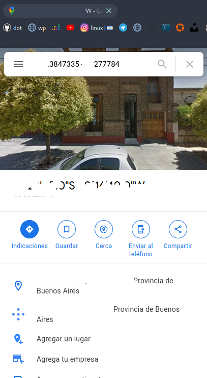
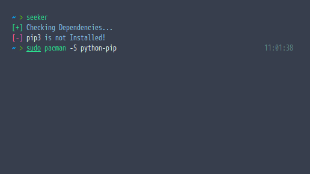

Seeker, una herramienta para localizar con precisión cualquier móvil utilizando ingenería social.
1 Intro
El concepto detrás de Seeker es muy sencillo. Es una herramienta muy facil de utilizar que permite genera un sitio web falso alojado en Serveo, y que genera un enlace el cual al enviarlo a la victima se le solicita permisos de ubicación y si el objetivo lo acepta ¡CHAZZZ!
Obtenemos:
- Longitud
- Latitud
- Presición
- Altitud
- Dirección
- Velocidad
Junto con estas opciones de localización obtenemos Información sobre el dispositivo [Sin pedir permisos]
- Sistema operativo
- Plataforma
- Número de núcleos
- Cantidad de ram aproximada
- Resolución de la pantalla
- Gpu
- Navegador
- Ip público
2 Es Diferente
Esta herramienta seeker es diferente a las convencionales herramientas conocidas como Ip GeoLocation, las cuales son herramientas que localizan la ubicación aproximada del ISP.
Seeker utiliza la API HTML para obtener la ubicación, y luego toma la latitud y longitud usando el GSP del dispositivo. Por lo cual Seeker funciona mucho mejor en móviles que en computadoras.
Generalmente si un usuario acepta la autorización de ubicación, la presición es de aproximadamente 30 metros.
3 Descarga
Existen varias formas de descargar esta herramienta. La más común es a través de git.
Kali Linux / Ubuntu / Parrot OS
|
|
Termux
|
|
Instalación en Arch
Si eres un usuario de Arch Linux como yo, podemos agregar los repositorios de Blackarch los cuales nos serviran en un futuro.
Primero que nada, debemos descargar un archivo desde la web oficial de BlackArch https://blackarch.org/strap.sh
|
|
Seguido, es tan simple de instalar haciendo:
|
|

Por cierto, si les interesa saber que hay en el respositorio de BlackArch les dejo unos comandos que les serán muy útiles
|
|
|
|
Uso
Para utilizar la herramienta no se necesita mucha inteligencia ni ser un completo experto en seguridad informática. Basta simplemente con ejecutar un par de comandos y saber que se está haciendo.
|
|

Este comando arroja información de ayuda para saber como manejar seeker
|
|

En esta imagen podemos ver que el funcionamiento de seeker es muy básico, pero funciona perfectamente. Acá tenemos que elegir las opciones en mi caso utilicé la plantilla de Whatsapp

Instalar y utilizar ngrok
En la última versión Serveo fue deshabilitado, así que debemos hacerlo de manera manual. Para esto utilizaremos ngrok
|
|
Una vez realizado esto y puesto en marcha el servidor, vamos a dirigirnos al link que nos genera ngrok
En desktop vamos a obtener el mismo resultado que en el móvil, entras al link y como cualquier otro grupo de whatsapp. Se ve exactamente igual.
En ambos dispositivos, te pide permisos de ubicación y una vez que lo aceptas el resultado es increíblemente exacto!
Como verán seeker nos devuelve con muchísima exactitud la geolocalización de manera muy precisa.


Errores
Si pip3 no está instalado

|
|
Si no tiene permisos para ejecutarse
|
|